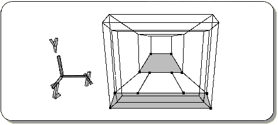
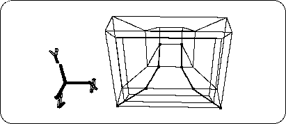
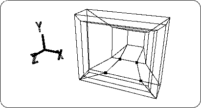
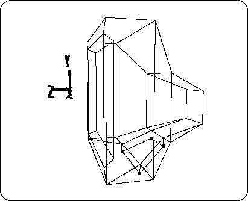
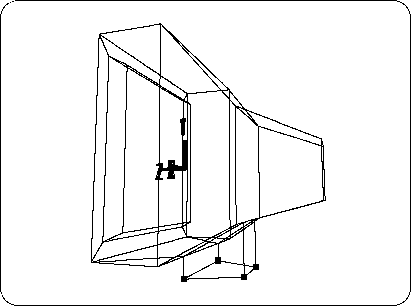
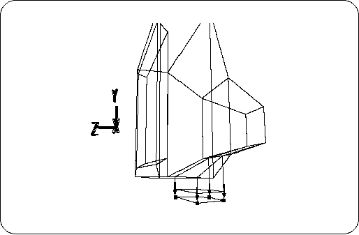
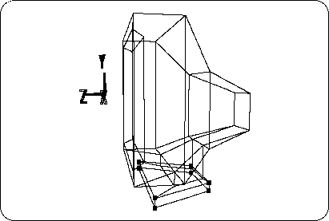
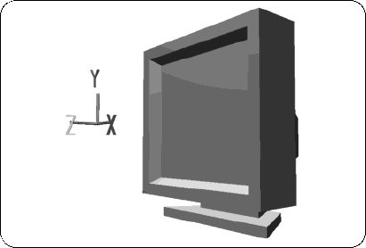

Return to previous page | Return to menu | Go to next page
Here are some things to watch out for. The filled surface (polygon) in the figure has a square shape, but since it has six vertices on the line (edge) that surrounds the surface, it is judged as a hexagon (Figure 2-34).

Sega Saturn only supports polygons up to quadrangles, so such polygons need to be divided into two or more quadrilateral polygons.
Add edges and divide the polygon as shown (Figure 2-35).

Next, change the 4 points in the figure to TAG (Figure 2-36). If there is another point that is already TAG, please cancel it.

Check that the operation mode is “TAG” and
[Duplicate] → [Immediate]
To duplicate the face surrounded by TAG.
Then, move the duplicated surface with [TransY] in the down (-Y) direction (Figure 2-37).

Next, make this duplicated plane parallel to the top or bottom of the TV monitor screen (parallel to the ZX plane).
For the four selected TAGs,
[Edit] → [Coordinate]
Then, set the Y position value to -0.3.
Make sure that “Local Coordinate” is selected in the dialog.
The result looks like the figure (Figure 2-38).

Furthermore, with TAG at the previous 4 points,
[Duplicate] → [Immediate] Doto duplicate the face surrounded by TAG, and move the duplicated face to the down (-Y) direction with [TransY] (Figure 2-39).

Next, transform the newly created part to make a pedestal part.
Select TAG as shown (Figure 2-40).
[Duplicate] → [Immediate]
[ScaleX, Y, Z] (select all) + left and right mouse buttons
Then, drag to enlarge the selected part in the ZX direction. The result is shown in the figure (Figures 2-41 and 2-42).

